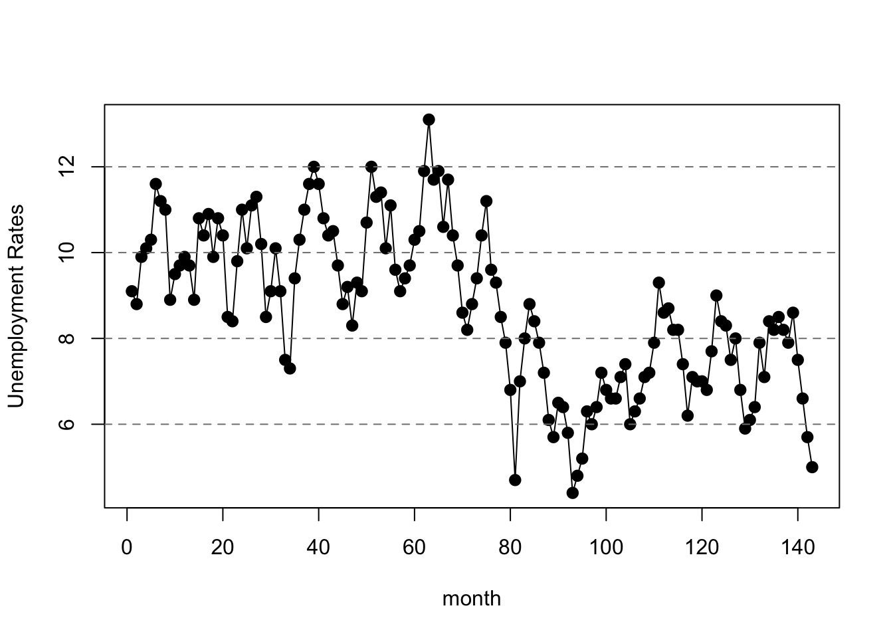
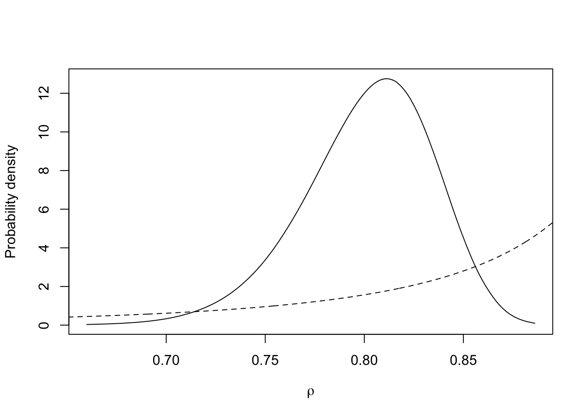

Analysing unemployment data with the AR1 Model
Runbing Zheng (and Haakon Bakka)
BTopic115 updated 22. May 2019
1 About
In this webside, we would like to show what the AR(1) model is and how to use INLA to analyse practical data with AR(1) model. We focus on the priors and posteriors for the hyper-parameters on the AR1 process. We do not discuss the data, nor claim that the final model is a good model for the dataset. We mainly highlight difficulties with overfitting and show some technical tools to resolve it.
1.1 Initialisation
We load libraries, including INLA (Installation and general troubleshooting).
library(INLA)
library(shiny)1.2 The Shiny App
Whenever you are asked to run the shiny app shiny-ar1.R you need to do the following. Please note that new folders and files are created in the current working folder! This step is not needed if you are viewing the website offline (after downloading repository).
Please be aware: The shiny app has not been checked in detail for errors.
## Copy the source file for the Shiny app
dir.create("shiny/")
download.file(url = "https://haakonbakka.bitbucket.io/shiny/shiny-ar1.R", destfile = "shiny/shiny-ar1.R")
Run the shiny app, and select the second dataset.
runApp('shiny/shiny-ar1.R')We recommend starting up a new R process, for example directly from the Terminal, and running the Shiny app in this.
1.3 The data
## Copy the data files
dir.create("data")
download.file(url = "https://haakonbakka.bitbucket.io/data/harmonised-unemployment-rates-mo.csv", destfile = "data/harmonised-unemployment-rates-mo.csv")
download.file(url = "https://haakonbakka.bitbucket.io/data/temperature-data", destfile = "data/temperature-data")2 Introduction of AR(1) Model
2.1 1.0. AR(p) Model
For time series, the autoregressive(AR) model is a representation of a type of random process, which specifies that the output variable depends linearly on its own previous values and a stochastic term.
The notation AR(p) indicateds an autoregressive model of order p, and the AR(p) model is defined as
\[ x_t=\sum_{i=1}^p\varphi_i x_{t-i}+\varepsilon_t \]
where \(\varphi_i,...,\varphi_p\) are the parameters of the model, and \(\varepsilon_t\) is white noise.
2.2 AR(1) Model
Particularly, when \(p=1\), the formula of AR(1) model for the Gaussian vector \(x=(x_1,...,x_n)\) is defined as
\[ x_i=\rho x_{i-1}+\varepsilon_i;\quad\varepsilon_i\sim\mathcal{N}(0,\tau^{-1})\quad i=2,...,n \] and the initial value is
\[ x_1\sim\mathcal{N}(0,(\tau(1-\rho^2))^{-1}) \] where \[ |\rho|<1 \]
2.3 Hyper-parameters of AR(1) Model
We assume \(\kappa\) is the marginal precision, which is the precision of \(u_t\). And its formula is
\[ \kappa=\tau(1-\rho^2). \]
The hyperparameter \(\theta_1\) is represented as
\[ \theta_1=\log(\kappa) \]
The hyperparameter \(\theta_2\) is represented as
\[ \theta_2=\log\left(\frac{1+\rho}{1-\rho}\right) \]
and the prior is defined on \(\theta=(\theta_1,\theta_2)\).
3 Introduction of the Data
We show two types of data in this webpage and the shiny app.
1. The temperature data of Trondheim in Norway, from October 1st, 2016 to October 30th, 2017:
We obtain the data from http://www.yr.no/place/Norway/S%C3%B8r-Tr%C3%B8ndelag/Trondheim/Trondheim/detailed_statistics.html.
2. The standardised unemployment data for females in Norway, from Mar. 2000 to Jan. 2012:
We obtain the data from https://datamarket.com/en/data/set/19rf/#!ds=19rf!prs=2:prt=8:pru=a&display=line&s=8i1 and http://data.is/1xV9PPs.
We only use the Unemployment data here, but both datasets are found in the shiny app.
4 Quick Fitting of AR(1) Model to the Data
4.1 Read the data
temp = read.csv("data/harmonised-unemployment-rates-mo.csv")
n = nrow(temp)
data = data.frame(y = temp[,2], t=1:n)
dates <- temp[,1]4.2 Plot the Data
plot(dates, data$y, lwd=2,
xlab='month', ylab='Unemployment Rates')
lines(dates,data$y)
abline(h=2*(-8:9), lty=2, col=gray(.5))
Please run shiny-ar1.R and open tab 1 to plot the data.4.3 Observation Likelihood
family <- "gaussian"This specifies which likelihood we are going to use for the data. In this case, we use gaussian likelihood, which means
\[y_t\sim\mathcal{N}(\eta_t,\tau_y^{-1}) \] where \(y_t\) referts the temperature of \(t\) index, \(\tau_y\) is the precision for the Gaussian observation, and \(\eta_t\) is the linear part.
We assume
\[ \eta_t= \beta_0+u_t \]
where \(\beta_0\) is the intercept, which is a constant, \(u_t\) is a stochastic process.
We will use AR(1) model to fit \(u_t\) and get \(\beta_0\), \(\tau_y\) at the same time.
4.4 Formula
formula1 <- y~ f(t,model='ar1')This specifies the formula, which means we want use AR(1) model in this case and just use the default setting here. See inla.doc("ar1") for details.
4.5 Call INLA
Next we run the inla-call, where we just collect variables we have defined.
res1 <- inla(formula=formula1,data=data,family=family)We use inla to calculate the posterior of the hyperparameters, i.e. \(\pi(\theta|y)\).
And then we can get \(\pi(\kappa|y)\) and \(\pi(\rho|y)\) from it by certain transformations.
4.6 Look at Results
summary(res1)##
## Call:
## "inla(formula = formula1, family = family, data = data)"
## Time used:
## Pre = 1.67, Running = 0.43, Post = 0.167, Total = 2.27
## Fixed effects:
## mean sd 0.025quant 0.5quant 0.97quant mode kld
## (Intercept) 8.5 0.69 7.1 8.6 9.8 8.6 0
##
## Random effects:
## Name Model
## t AR1 model
##
## Model hyperparameters:
## mean sd 0.025quant
## Precision for the Gaussian observations 1.86e+04 1.84e+04 1267.822
## Precision for t 2.62e-01 8.20e-02 0.123
## Rho for t 8.93e-01 3.40e-02 0.822
## 0.5quant 0.97quant mode
## Precision for the Gaussian observations 1.32e+04 6.38e+04 3466.879
## Precision for t 2.57e-01 4.31e-01 0.243
## Rho for t 8.95e-01 9.49e-01 0.900
##
## Expected number of effective parameters(stdev): 142.96(0.05)
## Number of equivalent replicates : 1.00
##
## Marginal log-Likelihood: -199.90This summary shows many of the results, including the distribution of the intercept, precision for the Gaussian observations, precision for t and the Rho for t, i.e. \(\beta_0\), \(\tau'\) ,\(\kappa\) and \(\rho\) in above formulas.
4.7 Look at the Quick Fitting Result (an Overfitting Situation)
plot(res1$summary.random$t[ ,"mean"]+res1$summary.fixed$mean[1],ylab="fitting result",type="l")
points(data$y, col="blue")In this image, the black points are the fitting result and the blue points are the real data. We can see that the two kinds of points almost overlap everywhere, which means the model result and the data are almost the same.
This situation is called overfitting and we do not want to have such situation. We will try to amend it.
5 Fix overfitting by Fixing \(\theta_1\)
5.1 The reason for Fixing \(\theta_1\)
We assume \(\sigma\) is the standard deviation of \(u_t,t=1,2...\), so the method to amend the overfitting is to reduce the \(\sigma\), since it could decrease the degree of the curve oscillation.
But we cannot change \(\sigma\) directly, so we have to find the relationship between \(\sigma\) and the hyperparameters.
Firstly, we can get the expression of \(\sigma\).
Because \[ u_t=\rho u_{t-1}+\varepsilon_t,\]
\[cov(u_t,u_t)=cov(\rho u_{t-1}+\varepsilon_t,\rho u_{t-1}+\varepsilon_t)\] \[\sigma^2=\rho^2\sigma^2+\frac{1}{\tau}\]
Then, we have
\[\frac{1}{\sigma}=\tau(1-\rho^2)\]
And as mentioned above, we know
\[ \kappa=\tau(1-\rho^2). \]
We now know the relationship between \(\sigma\) and \(\kappa\) is
\[ \sigma=\frac{1}{\sqrt{\kappa}}\]
Thus, we need to increase the value of \(\kappa\) in order to decrease \(\sigma\).
In addition,
\[ \theta_1=\log(\kappa)=-\frac{1}{2}\log\sigma \]
Therefore, we can amend the overfitting by increasing the value of \(\theta_1\).
5.2 Fix \(\theta_1\) and Look the Result
With little calculation on basis of the results in 3.6 part, we could get the current distribution of \(\theta_1\) as following.
For unemployment rates data:
mean: -1.350927
0.025quant: -2.106196 0.5quant: -1.375948 0.975quant: -0.8234837
For example, we can try to fix it by setting initial value of \(\theta_1\) as 0.5.
hyper2 = list(theta1=list(initial=0.5, fixed=T))
formula2 <- y~ f(t,model='ar1',hyper=hyper2)
res2 <- inla(formula=formula2,data=data,family=family)
plot(data$y, col="blue",
ylab="fitting result")
lines(res2$summary.random$t[ ,"mean"]+res2$summary.fixed$mean[1])The blue point is the data, and the black line is the fitting result. Now it can reflect the tendency of the data better. And the graph of this code is also the default situation in the following Shiny App.
This Shiny App also shows the fitting result corresponding different fixed values of \(\theta_1\).
Please run shiny-ar1.R and open Tab 26 Fix Overfitting by PC Prior
In the above measure to solve the overfitting, we set \(\theta_1\) as a fixed value, which is an effective way. But the problem is that by doing this, the data would not affect the distribution of \(\theta_1\) any more. So let’s see an alternative approach which can eliminate this problem.
6.1 What is PC Prior
Broadly speaking, Penalised Complexity or PC priors, are informative priors. PC priors are very flexible, since we can control them by specifying parameters of them. And because of the principle used to build them, such priors are useful in some practical situations.
So we try to use PC priors here.
And there is an important concept about PC priors. Every PC prior has the base-model. And the definition of “base-model” is that for a model component with density \(\pi(x|\xi)\) controlled by a flexibility parameter \(\xi\), the base model is the “simplest” model in the class. For notational clarity, we will take this to be the model corresponding to \(\xi = 0\). It will be common for \(\xi\) to be non-negative. The flexibility parameter is often a scalar, or a number of independent scalars, but it can also be a vector-valued parameter.
You are able to get more information about PC priors in https://arxiv.org/pdf/1403.4630.pdf .
6.2 The PC Priors We Use for \(\theta_1\) and \(\theta_2\)
We choose a pc.prec for \(\theta_1\) and pc.cor1 for \(\theta_2\).
The “pc.prec” is the PC prior for precision, and the “pc.cor1” is the PC prior for the correlation \(\rho\) with \(\rho=1\) as the base-model.
pc.prec:
“pc.prec” refers PC prior for precision. And this PC prior for the precision \(\kappa\) has density
\[ \pi(\kappa)=\frac{\lambda}{2}\kappa^{-3/2}\exp\left(-\lambda\kappa^{-1/2}\right),\tau>0\]
for \(\tau>0\), where \[\lambda=-\frac{\ln(\alpha)}{u}\]
and \((u,\alpha)\) are the parameters to this prior. The interpretation of \((u,\alpha)\) is that
\[Prob(\sigma>u)=\alpha,u>0,0<\alpha<1,\]
where the standard deviation is \(\sigma=1/\sqrt{\kappa}\).
By the way, since \(\sigma=\frac{1}{\sqrt{\kappa}}\),we also have \(\pi(\sigma)=\lambda e^{-\lambda\sigma}\).
Please see inla.doc("pc.prec") for further details.
The PC prior for precision is as following with different values of parameters \((u,\alpha)\).
Please run shiny-ar1.R and open Tab 3pc.cor1:
“pc.cor1” refers the PC prior for the correlation \(\rho\) with \(\rho=1\) as the base-model.
This prior is the PC prior for the correlation \(\rho\) where \(\rho\) as the base-model. The density for \(\rho\) is
\[ \pi(\rho)=\frac{\lambda\exp(-\lambda\mu(\rho))}{1-\exp(-\sqrt{2}\lambda)}J(\rho)\]
where
\[\mu(\rho)=\sqrt{1-\rho}\]
and
\[J(\rho)=\frac{1}{2\mu(\rho)}\]
The parameter \(\lambda\) is defined through
\[ Prob(\rho>u)=\alpha,-1<u<1,\sqrt{\frac{1-u}{2}}<\alpha<1\]
where \((u,\alpha)\) are the parameters to this prior.
Please see inla.doc("pc.cor1") for further details.
The PC prior for the correlation \(\rho\) where \(\rho\) as the base-model is as following with different values of parameters \((u,\alpha)\).
Please run shiny-ar1.R and open Tab 4We should notice that some values of the parameters are legtimate, while some are illegtimate.
6.3 Fit New Model
family <- "gaussian"
hyper3 <- list(theta1 = list(prior="pc.prec", param=c(0.06, 0.008)),
theta2 = list(prior="pc.cor1", param=c(0.9, 0.9)) )
formula3 <- y~ f(t,model='ar1',hyper=hyper3)
res3 <- inla(formula=formula3,data=data,family=family,
control.predictor = list(compute=T))
plot(data$y, col="blue",
ylab="fitting result")
lines(res3$summary.random$t[ ,"mean"]+res3$summary.fixed$mean[1])The fitting result is also fine.
Remark:
We set “pc.cor1” as the prior of the \(\theta_2\), but we might aware that \(\theta_2\) is not the correlation in AR(1) model. In fact,
\[ \theta_2=\log\left(\frac{1+\rho}{1-\rho}\right) \]
where the \(\rho\) is the correlation in the model.
The actual process in INLA is as following:
1. Transform the prior of \(\rho\) to the prior of \(\theta_2\), which is hidden.
2. Computer the posterior of \(\theta_2\) on the basis of the prior of it by INLA. And the posterior of \(\theta_2\) is stored in res3$internal.marginals.hyperpar and called `Log precision for t.
3. Transform the posterior of \(\theta_2\) to the posterior of \(\rho\), which is stored in res3$marginals.hyperpar and called `Rho for t.
6.4 More Results of the Model
6.4.1 Plot the Random Effect Quantiles
For temperature data:
We get all the following results, when we set \(u=0.06, \alpha=0.01\) in pc.prec, \(u=0.9, \alpha=0.9\) in pc.cor1.
For unemployment rates data:
We get all the following results, when we set \(u=0.06, \alpha=0.008\) in pc.prec, \(u=0.9, \alpha=0.9\) in pc.cor1.
plot(1:n, res3$summary.random$t$`0.97`, col="red", type="l",
ylim=c(-6,6),xlab="measurement number", ylab = "quantiles")
lines(1:n, res3$summary.random$t$`0.5quant`)
lines(1:n, res3$summary.random$t$`0.02`, col="blue")6.4.2 Plot the Marginal of Hyper-parameters
In following graphs, the real lines represent posterior distributions, and the dotted lines represent prior distributions. What’s more, we use some constants to make certain prior distributions visible.
m.sigma = inla.tmarginal(fun=function(x)x^(-0.5),marginal =
res3$marginals.hyperpar$`Precision for t`)
plot(m.sigma, type="l", xlab = expression(sigma), ylab = "Probability density")
xvals = seq(0.5, 1.5, length.out=1000)
lambda=-log(0.008)/0.06
lines(xvals, 1e30*lambda*exp(-lambda*xvals), lty='dashed')This is the prior and posterior distribution of the marginal standard deviation.
m.rho <- inla.tmarginal(fun=function(x)x,marginal =
res3$marginals.hyperpar$`Rho for t`)
plot(m.rho, type="l", xlab = expression(rho), ylab = "Probability density")
xvals = seq(0.5, 1, length.out=1000)
lines(xvals, 5*inla.pc.dcor1(xvals, 0.9 , 0.9 , log = FALSE), lty='dashed')
This is the prior and posterior distribution of \(\rho\) for \(u_t\). We can see \(\rho\) is closed to 1, which means \(u_t\) depends on \(u_{t-1}\) largely.
6.4.3 Plot the Marginal of Parameters
m.t.70 <- inla.tmarginal(fun = function(x) x, marginal =
res3$marginals.random$t$index.70)
# - m.t.70 is one of the marginals for the parameters beloning to the plate iid effect
# - it is number 70, which corresponds to plate=70, which is our 70th row of data
plot(m.t.70, type="l", xlab = "marginal t nr 70", ylab = "Probability density")
We observe one prior and posterior distribution of the random effects of which the index is 200.
6.4.4 Plot the Marginal of a Fixed Effect
m.theta3 <- inla.tmarginal(fun=function(x)x,marginal =
res3$marginals.fixed$`(Intercept)`)
plot(m.theta3, type="l", xlab = "intercept", ylab = "Probability density")This is the posterior distribution of intercept. The prior is flat.
6.5 Fit the Model with Different Priors of the Parameters
We set \(\alpha=0.01\) in pc.prec, and \(u=0.9, \alpha=0.9\) in pc.cor1, while you can change the value of \(u\) in pc.prec, then you will get the fitting result in the following Shiny App.
Please run shiny-ar1.R and open tab 56.6 Plot residuals
hist(data$y - res3$summary.fitted.values$mean, breaks = 50)6.7 References
Robert H. Shumway, and David S. Stoffer. Time Series Analysis and Its Applications. New York: Springer, 2011
inla.doc(“ar1”), inla.doc(“pc.prec”), inla.doc(“pc.cor1”) in package INLA